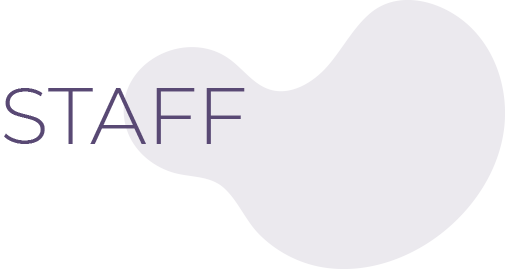

-
CECILIA JACOBSEN
Médica especialista en Clínica Médica y Neurología -
LUKIANCZUK PAULA
Terapia Física Rehabilitación Neurológica -
MARIANGELES KEROPIAN
Clínica Médica - PAMI
-
MIRTA IVANOVICH
Lic. en Terapia Ocupacional
Rehabilitación y orientación ocupacional -
OLDANI JOSE
Médico Psiquiatra -
MARCELA VERDURAS
Fonoaudióloga / Rehabilitación del habla, el lenguaje y la deglución -
SOLOVEI ELIZABETH
Kinesióloga / Fisiatría (R.P.G Souchard) -
SOSA TOMADA VALERIA
Licenciada en Kinesiología y Fisioterapia
Rehabilitación Uroginecológica